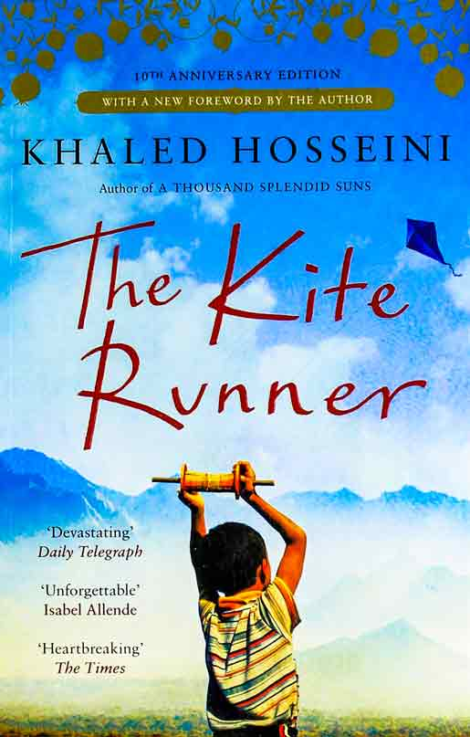
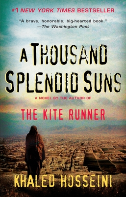
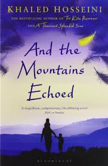

Khaled Hosein book collection
Khaled Hosseini is a well-known Afghan-American author, and he has written several novels.
Here are some of his notable books:
"The Kite Runner" (2003):
This novel is one of Khaled Hosseini's most famous works. It tells the story of Amir, a young boy from
Kabul,
and his complicated relationship with his childhood friend Hassan.
"A Thousand Splendid Suns" (2007):
This novel explores the lives of two Afghan women, Mariam and Laila,
and how their destinies become intertwined amid the backdrop of Afghanistan's troubled history.
"And the Mountains Echoed" (2013):
This novel weaves together multiple interconnected stories across different generations and places,
exploring the bonds between family members and the impact of choices made by characters over the years.
  
Orhan Pamuk book collection
Orhan Pamuk is a renowned Turkish author and Nobel laureate known for his intricate and thought-provoking
novels.
He has written numerous books over the years, and here are some of his notable works:
"My Name is Red" (1998):
This historical novel is set in 16th-century Istanbul and
revolves around the world of Ottoman Empire miniature painters.
"A Strangeness in My Mind" (2014):
This novel follows the life of Mevlut Karataş,
a street vendor who sells boza (a traditional Turkish drink) in Istanbul.
"Istanbul: Memories and the City" 2003:
is a non-fiction memoir by the Turkish
author Orhan Pamuk.
In this book, Pamuk reflects on his personal experiences and memories of Istanbul